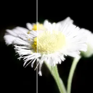

Bagliore soft

Sovrappone in scherma una copia sfocata e morbida dell'immagine per un bagliore sognante, soprattutto dalle luci.
Bagliore morbido aggiunge sopra l'immagine una copia sfocata di sé stessa, per un aspetto sognante e velato, soprattutto dalle luci. Dimensione indica quanto è morbida la velatura, Luci quanto proviene dalle parti chiare e Colore la tinge. Opacità la miscela con l'originale.
Impostazioni
| Impostazione | Tipo | Intervallo | Predefinito |
|---|---|---|---|
| Dimensione | Numero | Da 0 a 300 | 20 |
| Luminosità | Numero | Da 0 a 3 | 1 |
| Contrasto | Numero | Da -1 a 1 | 0.2 |
| Luci | Numero | Da 0 a 1 | 0.5 |
| Colore | Colore | – | #FF5566 |
| Fusione | Numero | Da 0% a 100% | 25% |
| Opacità | Numero | Da 0 a 1 | 1 |
| Bagliore esterno | Numero | Da 0 a 1 | 1 |